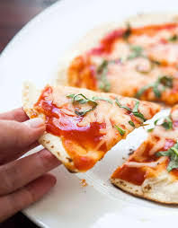

Homepage
Pizza

Put the Momo on a plate with the dipping sauce, and serve up!
- Place the warm water in the large bowl of a heavy duty stand mixer. Sprinkle the yeast over the warm water and let it sit for 5 minutes until the yeast is dissolved.
After 5 minutes stir if the yeast hasn't dissolved completely. The yeast should begin to foam or bloom, indicating that the yeast is still active and alive.
(Note that if you are using "instant yeast" instead of "active yeast", no proofing is required. Just add to the flour in the next step.)
- Add the flour, salt, sugar, and olive oil, and using the mixing paddle attachment, mix on low speed for a minute. Then replace the mixing paddle with the dough hook attachment.
Knead the pizza dough on low to medium speed using the dough hook about 7 to 10 minutes.
If you don't have a mixer, you can mix the ingredients together and knead them by hand.
The dough should be a little sticky or tacky to the touch. If it's too wet, sprinkle in a little more flour.
- Bake pizza in the 475°F oven, one at a time, until the crust is browned and the cheese is golden, about 10 to 15 minutes. If you want, toward the end of the cooking time, you can sprinkle on a little more cheese.